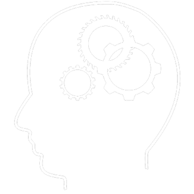

Bonjour, je me présente, Barthélémy Lantin, et je serais votre hôte lors de votre visite sur mon site. Je suis étudiant à la Normandie Web School en Bachelor Chef de projet digital. Vous trouverez ici une vitrine de mes différentes créations, en tant que marketeur, designer ou codeur. Et si cela vous satisfait, je serai alors ravi d’être votre alternant !
Qui suis-je?
Le commencement
Bonjour, je suis Barthélémy. Né le 17 Mars 1993 à Paris, je commence 48h plus tard une longue série de voyage à travers le monde. Première halte, Johannesburg, en Afrique du Sud, où je passe 4 ans, l’anglais devenant ma langue natale. Je rentre en France pour habiter dans différents lieux (Paris et banlieues, Périgord…) puis j’atterris en Normandie lors de ma dixième année.

Mon long périple dans l'apprentissage
plus tard en 2012, je décroche mon baccalauréat scientifique, avec la mention européenne français/anglais. Je commence ensuite des études centrées sur le médical et les sciences académiques (je possède aujourd’hui encore des compétences en soins infirmiers et en chimie, cordes toujours utiles à ajouter à son arc). Durant ces années j’ai officié au CHU dans différents postes (bloc opératoire, stérilisation centrale, pharmacie, chirurgie, psychiatrie…). Mais une prise de conscience de ma vie à long terme me fait écourter mes études en soins infirmiers, puis je commence à travailler dans divers domaines. J’ai été vendeur en jeux de société, équipier polyvalent en restauration rapide, barman, ouvreur de salle… avant de découvrir la NWS lors d’un salon du travail, et de commencer ma formation au sein de cette école.
Le travail ok, mais à côté?
Geek dans l’âme depuis mon plus jeune âge, les écrans m’ont toujours attirés et fascinés, d’aussi loin que remontent mes souvenirs.
Passionné de jeux vidéos, au grand dam de mes parents, j’ai toujours baigné dans cet univers de pop culture au travers des jeux et
d’internet.
Ça ne m’empêche cependant pas d’avoir d’autres passions dans la vie, à noter la musique et la lecture qui occupent une place
prépondérante dans mon quotidien. Je suis moi même musicien dans un groupe de rock basé à Rouen, où je suis le guitariste lead. Et
lorsque je n’en joue pas, j’en écoute ! Je le porte jusque dans ma peau, ayant plusieurs tatouages en rapports avec la musique.
En ce qui concerne les lettres, je dévore régulièrement romans, bandes dessinées, comics, recueils de nouvelles… Il est rare de ne pas
trouver un bouquin dans ma besace !
Cet amour des mots m’a donné une certaine aisance avec la langue de Molière, ce qui fait de moi un recours pour mes collègues et amis
lorsqu’il faut trouver comment tourner astucieusement une phrase.
Qu'ai-je fait?
-
Octobre 2019 - /

Début Bachelor Chef de projet digital, Normandie Web School
Apprentissage du développement, du marketing et du design dans le milieu du web
-
Été 2018
Barman
Service au bar du Délirium Café, Rouen
-
Avril-Juin 2018
Équipier en restauration rapide
employé en salle et en cuisine, Macdonald Grand Quevilly
-
Décembre 2017
Vendeur loisir
vente et promotion de l'enseigne, Bazar du Bizarre, Rouen
-
Février-Octobre 2017
Étudiant en soins infirmier
Formation au métier d’infirmier, dont 3 stages, en chirurgie, psychiatrie et gérontopsychiatrie
-
Octobre-Décembre 2016, Été 2016, Été 2015
Agent d'entretien qualifié
Agent de stérilisation au pôle pharmacie, CHU Charles Nicolle, Rouen
-
2014-2016
DUT Chimie
étude du métier de technicien chimiste, IUT de Mont-Saint-Aignan
-
Été 2013

ASH
Agent de service hospitalier au bloc neurochirurgie, CHU Charles Nicolle, Rouen
-
2012-2014
PACES
Étudiant en première année de médecine, faculté de médecine et pharmacie, Rouen
-
2012
Baccalauréat
Diplômé du baccalauréat général scientifique spécialité physique-chimie, mention européenne